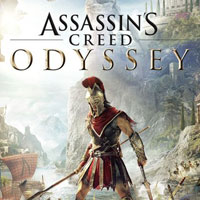
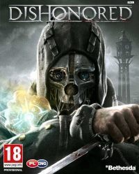
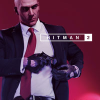
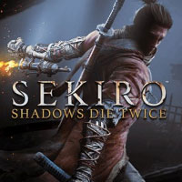

All about games

Assassin's Creed Odyssey to dziesiąta główna odsłona bestsellerowego cyklu sandboksów zapoczątkowanego w 2007 roku.
W przeciwieństwie do poprzednich części serii,
omawiana produkcja wykonała silny zwrot w stronę gatunku RPG.
Przemierzając antyczną Grecję, gracz m.in. podejmuje wybory moralne w misjach oraz odgrywa postać w interaktywnych dialogach.

Dishonored wydane na platformę PC, PS3 i X360 to innowacyjna mieszanka typowego FPS-a i skradanki,
w której dokonywane wybory i preferowany styl gry wpływają na przebieg rozgrywki i otoczenie bohatera.
Fikcyjne miasto Dunwall, które zwiedzamy w czasie przygód, czerpie z estetyki steampunka i epoki wiktoriańskiej.

Hitman 2 jest kolejną odsłoną popularnego cyklu gier akcji tworzonych przez duńskie studio IO Interactive,
a zarazem bezpośrednią kontynuacją hitu z 2016 roku.
Akcja gry Hitman 2 toczy się po wydarzeniach przedstawionych w poprzedniej części serii.
Głównym zadaniem Agenta 47 jest wyśledzenie „tajemniczego klienta” i rozbicie oddziałów jego bojówek.

Sekiro: Shadows Die Twice to przygodowa gra akcji TPP,
której ważną część stanowią elementy skradankowe.
Tytuł opracowało japońskie studio FromSoftware,
a na czele produkcji stał legendarny projektant Hidetaka Miyazaki,
który pełnił tę samą rolę przy tworzeniu Dark Souls, Bloodborne i Dark Souls III